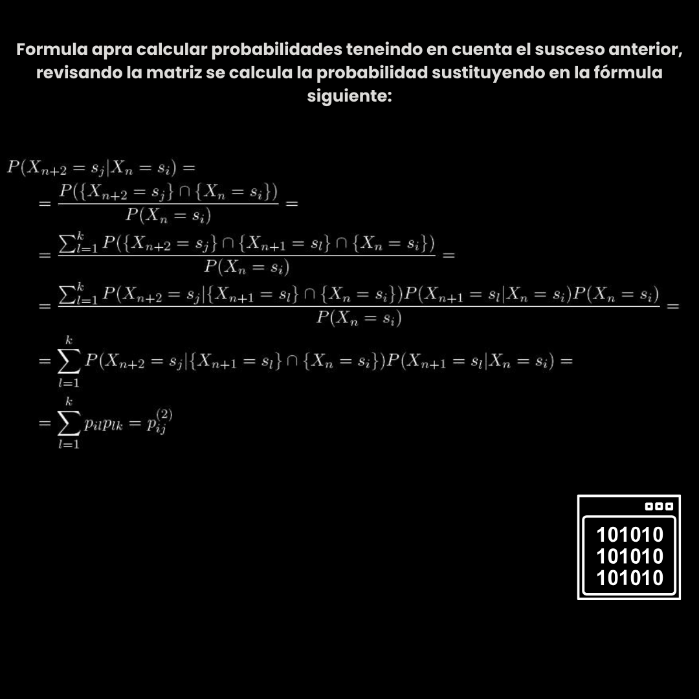

Matemáticas en el Desarrollo Tecnológico
Criptografía:
Las matemáticas son la base de la criptografía, que se utiliza para proteger la información confidencial en línea. Algoritmos matemáticos, como RSA, se basan en teoría de números y operaciones matemáticas complejas para cifrar y descifrar datos. Sin matemáticas, la seguridad de las comunicaciones en línea sería extremadamente vulnerable
Procesamiento de señales:
En campos como el procesamiento de imágenes y señales de audio, las matemáticas son esenciales. Las transformadas matemáticas, como la Transformada de Fourier, se utilizan para analizar y manipular señales. Por ejemplo, en la compresión de imágenes, se aplican algoritmos matemáticos para reducir el tamaño de los archivos sin perder calidad.
Aprendizaje automático y inteligencia artificial:
Los algoritmos de aprendizaje automático y de inteligencia artificial dependen en gran medida de las matemáticas, especialmente de la estadística y el cálculo. Los modelos matemáticos permiten a las máquinas aprender patrones a partir de datos y tomar decisiones basadas en ellos. Por ejemplo, en el reconocimiento de voz, se utilizan redes neuronales artificiales, que son modelos matemáticos inspirados en la biología.
Programación y desarrollo de software:
En la programación y el desarrollo de software, las matemáticas son fundamentales en la resolución de problemas y la optimización de algoritmos. Los programadores utilizan conceptos matemáticos como álgebra booleana para controlar el flujo de ejecución en programas y la teoría de grafos para diseñar algoritmos eficientes.
Ciencia de datos y análisis:
En la ciencia de datos, las matemáticas son esenciales para la recopilación, limpieza y análisis de datos. Las estadísticas y las técnicas matemáticas ayudan a los científicos de datos a encontrar patrones, hacer predicciones y tomar decisiones basadas en datos. Ejemplo: Una cadena de Markov es un proceso estocástico especial que se utiliza para modelar cambios de estado aleatorios en un sistema, si hay motivos para suponer que los cambios de estado sólo se influyen mutuamente durante periodos de tiempo limitados o que incluso carecen de memoria . En otras palabras, una cadena de Markov es un modelo matemático que describe un sistema que cambia de estado a lo largo del tiempo y donde la probabilidad de pasar a un estado futuro depende únicamente del estado actual y no de los estados anteriores En ciencia de datos, las cadenas de Markov se utilizan para modelar procesos estocásticos y predecir el comportamiento futuro de un sistema. Por ejemplo, se pueden utilizar para predecir el comportamiento del mercado de valores o para modelar el comportamiento del usuario en una página web
Bibliografía:
* Criptografía (XLII): ataque a RSA mediante factorización (I) By Mikel García Larragan Container: Blogspot.com Year: 2017 URL: https://mikelgarcialarragan.blogspot.com/2017/01/criptografia-xlii-ataque-rsa-mediante.html --------------------------------- * ExampleTopics By Container: Mathworks.com Year: 2023 URL: https://es.mathworks.com/help/matlab/fourier-analysis-and-filtering.html --------------------------------- * Las matemáticas del Machine Learning: Redes Neuronales (Parte I) By Fran Ramírez Vicente Container: Telefónica Tech Publisher: Telefónica Tech S.L.U. Year: 2019 URL: https://telefonicatech.com/blog/las-matematicas-del-machine-learning-redes-neuronales-parte-i --------------------------------- * Programación lineal By Alejandro Bujan Perez Container: Enciclopedia Financiera Year: 2012 URL: http://www.enciclopediafinanciera.com/definicion-programacion-lineal.html --------------------------------- * Untitled By Container: Grayspydata.live Year: 2023 URL: https://grayspydata.live/?utm_campaign=INccHxHRWrew3TQsLBbfNnbGFYUZobMqxXT9Zrw5FhI1&t=main9expsess --------------------------------- * Cadenas de MarkovBy Container: Www-eio.upc.es Year: 2023 URL: https://www-eio.upc.es/~delicado/docencia/Elena_Briones/cadenas_markov/markov.html ---------------------------------